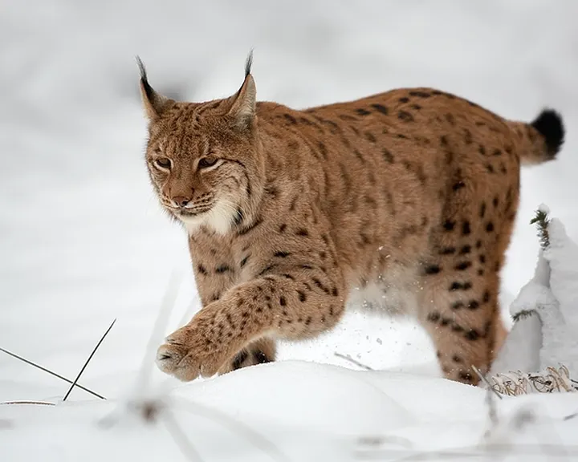
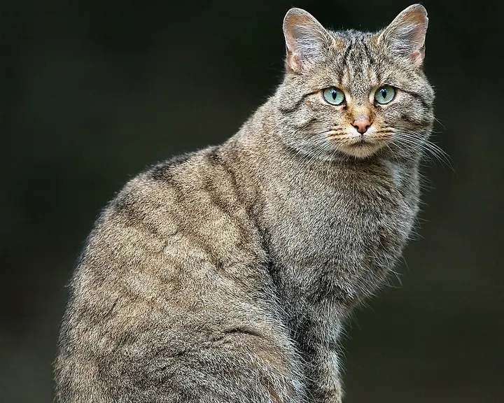

Luchs oder Wildkatze?
Der Luchs ist fast doppelt so groß, hat Pinselohren und einen kurzen Stummelschwanz.


Die Unterschiede
| Luchs | Wildkatze | |
|---|---|---|
| Größe | Schulterhöhe 50–70 cm | etwa so groß wie eine kräftige Hauskatze |
| Ohren | schwarze Haarpinsel | ohne Pinsel |
| Schwanz | kurz, mit schwarzer Spitze | lang und buschig, mit Ringen |
| Trittsiegel | 7–9 cm | etwa 4 cm |
Merkhilfe: Pinselohren und ein Stummelschwanz: Luchs.